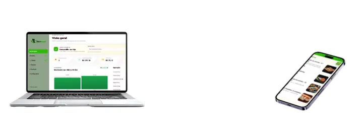

Cardápio com a sua marca
Personalize identidade visual, produtos, categorias, preços e informações para manter a experiência alinhada ao seu negócio.
Transforme seu atendimento com um cardápio digital profissional, painel completo de gestão e uma experiência de compra pensada para facilitar pedidos e organizar sua operação.

Tenha uma vitrine profissional para seus produtos e um painel para acompanhar o que acontece no dia a dia.
Uma experiência simples para o cliente e uma operação mais organizada para quem administra.
Personalize identidade visual, produtos, categorias, preços e informações para manter a experiência alinhada ao seu negócio.
Acompanhe pedidos, clientes, produtos e informações importantes em um painel organizado.
Centralize o fluxo dos pedidos e acompanhe cada etapa da operação com mais clareza.
Ofereça uma jornada mais completa com opções digitais de pagamento integradas ao cardápio.
Facilite o contato com o cliente e leve a comunicação para o canal que ele já usa todos os dias.
Estrutura preparada para integrações de mensuração como Google Analytics, Tag Manager e Meta Pixel.
Fortaleça a presença digital do seu negócio usando um endereço próprio e uma experiência profissional.
Cardápio pensado para funcionar bem em celular, tablet e computador, sem complicar o pedido.
O cliente encontra seus produtos, monta o pedido e segue para a finalização. Enquanto isso, sua equipe acompanha tudo pelo painel.

O Seu Food pode conectar a jornada do pedido ao pagamento, deixando a experiência mais prática para o cliente e mais organizada para o negócio.
Organize produtos e categorias de acordo com a realidade da sua operação.
Tamanhos, sabores e adicionais organizados para facilitar a escolha.
Combos, adicionais, bebidas e complementos em uma jornada simples.
Tamanhos, sabores, complementos e montagem do pedido de forma intuitiva.
Combinados, peças, temakis e categorias apresentadas com visual profissional.
Cardápios do dia, tamanhos e opções para uma compra rápida no celular.
Estrutura flexível para lanchonetes, cafeterias, pastelarias e muito mais.
Em vez de depender apenas de uma vitrine genérica, apresente sua marca, seus produtos e sua experiência em um ambiente criado para o seu negócio.
Quero ver funcionandoSe ainda ficar alguma pergunta, solicite uma apresentação da plataforma.
Não. A estrutura pode atender diferentes negócios de alimentação, como pizzarias, hamburguerias, açaíterias, sushi, marmitarias, lanchonetes e outros formatos.
Sim. A proposta da plataforma é permitir que o cardápio tenha identidade visual e informações alinhadas ao seu negócio.
Sim. O painel concentra informações da operação e permite acompanhar pedidos, produtos, clientes e outros dados relevantes.
Sim. A plataforma possui estrutura de integração com Mercado Pago e pode oferecer uma jornada de pagamento conectada ao pedido.
Sim. A experiência é responsiva e pensada principalmente para a navegação em dispositivos móveis.
Preencha os dados e gere uma mensagem pronta para solicitar uma apresentação.